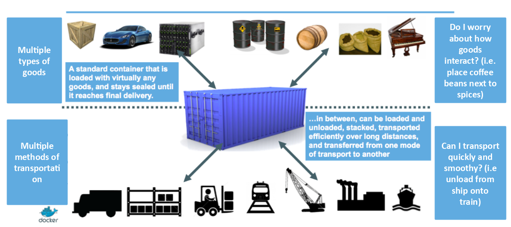
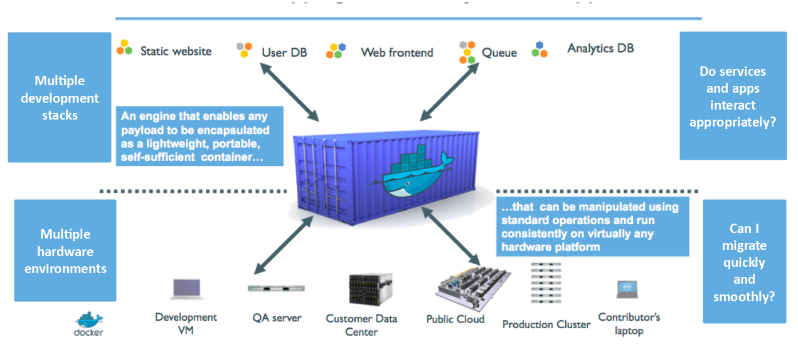
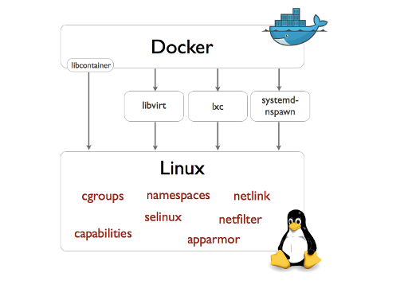
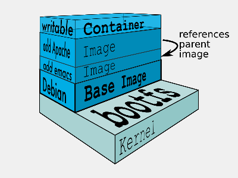

certified trainer
🐳
- I'm a developer, devops, craftsman, factotum
- I 💓 & work @Zenika
- I 💓 GNU/Linux, Docker & GNU/Emacs
- I 💓 Free-software !
- I 💓 Java, Go, Python and much more
- And I 💓 unicode, 🚴 & 🚶
🐸
🐸
🐳
"Docker is an open platform for developers and sysadmins to build, ship, and run distributed applications."
– docker.com
"Docker is an open-source project that automates the deployment of applications inside software containers"
– wikipedia.org
Container in "goods" transportation.


Standing on the shoulders of giants


Quick note : Repeat after me Containers ARE NOT VMs !

# Run an image…
$ docker run -ti --rm ubuntu:14.04 /bin/bash
# … or something more useful
$ docker run -d -p 8080:8080 -p 80:8000 \
-v $PWD/traefik.toml:/traefik.toml \
emilevauge/traefik
# … or totaly crazy
$ docker run -d -v /tmp/.X11-unix:/tmp/.X11 \
-e DISPLAY=unix$DISPLAY \
# …
--name spotify vdemeester/spotify
# What is running ?
$ docker ps
Démo 🙆
🃏 🂠 🃟
label ps filter : based on container labels (presence and/or value)
$ docker ps --filter=label=garbage # returns container with label garbage, whatever value it has $ docker ps --filter=label=garbage=true # returns container with label garbage that have true as value
ancestor ps filter : based on images and ancestor images
$ docker ps --filter=ancestor=ubuntu:14.04 --format "table {{.ID}}\t{{.Image}}"
# […]
CONTAINER ID IMAGE
e24c7e6b4aaf vdemeester/scudcloud
e24c7e6b4aaf vdemeester/spotify
stop-signal on run command
# FIXME use something that show signals $ docker run --stop-signal=SIGNAME -it busybox sh
STOPSIGNAL on Dockerfile : setup default stop-signal
FROM busybox STOPSIGNAL SIGNAME
Always restart the container regardless of the exit status, but do not start it on daemon startup if the container has been put to a stopped state before.
RepoTags, RepoDigests)
$ docker inspect --type=image vdemeester/spotify
# […]
"RepoTags": [
"vdemeester/spotify:latest"
],
"RepoDigests": [],
# […]
Add the possibility to pass environment variable to build —
e.g. HTTP_PROXY variables 😲.
FROM ubuntu:14.04 # Define the "foo" arg and set a default value ARG foo=defaultfoo # Create a label "mylabel" and set it to the value of $foo LABEL mylabel=$foo
# label = defaultfoo $ docker build -t foo . # label = commit123 $ docker build -t foo --build-arg foo=commit123 .
Add a pkg/discovery package to provide nodes discovery between daemon instances.
--cluster-store: url of the distributed storage backend
--cluster-advertise: address of the daemon instance to advertise
libnetwork, the new network stack, for the
overlay multi-host plugin.
/info endpoint (docker info) to know which storage
backend to watch for cluster members. Swarm will use this in the future.
tag : how to format a tag that identifies the container's log
messages
$ docker daemon --log-driver=syslog --log-opt tag="{{.ImageName}}/{{.Name}}/{{.ID}}" …
# Give this in syslog
Aug 7 18:33:19 HOSTNAME docker/hello-world/foobar/5790672ab6a0[9103]: Hello from Docker.
labels & env options : add additional attributes for use with
logging drivers that accept them
$ docker daemon --log-driver=json-file --log-opt labels=foo --log-opt env=foo,fizz
# Run a container
$ docker run --label foo=bar -e fizz=buzz -d -P training/webapp python app.py
# Look at the json file
"attrs":{"fizz":"buzz","foo":"bar"}
Linux kernel user namespace support provides additional security by enabling a process–and therefore a container–to have a unique range of user and group IDs.
In short : root in container can be a different user on host
$ docker daemon --userns-remap=default … $ docker run -itd busybox sh # Get the PID of the sh process 165536 1279 … /bin/sh
… a.k.a. plugins ◲
\o/
volume)create: Create a volume
# Using default local driver $ docker volume create --name=test # Using custom driver… $ docker volume create --driver=convoy --name=myconvoy # … with custom options $ docker volume create --driver=kvfs --opt root=/root/of/keys
rm: Remove a volume
inspect: Return low-level information on a volume
ls: List volumes
/var/lib/docker{,/0.0}/volumes
-v on run create a local volume
Thus
$ docker run -v /var/cache/ -itd ubuntu /bin/bash
is equivalent to (expect the name)
$ docker volume create --name cache $ docker run -v name:/var/cache -itd ubuntu /bin/bash
Provides a FUSE filesystem representation of a key-value store (https://goo.gl/YpgPIA — https://github.com/cpuguy83/docker-kvfs-driver)
docker how to communicate with it and start it
$ echo "unix:///var/run/docker/plugins/kvfs.sock" > /etc/docker/plugins/kvfs.spec $ nohup docker-kvfs-driver --store consul --addr $(docker-machine ip paris):8500
$ docker volume create --driver=kvfs --name=kv1 $ docker run -it -v kv1:/data busybox /bin/sh
Provides a variety of storage back-ends, supports vendor-specific extensions such as snapshots, backups and restore. (https://github.com/rancher/convoy)
$ echo "unix:///var/run/convoy/convoy.sock" > /etc/docker/plugins/convoy.spec $ truncate -s 100G data.vol ; truncate -s 1G metadata.vol $ sudo losetup /dev/loop5 data.vol ; sudo losetup /dev/loop6 metadata.vol $ convoy daemon --drivers devicemapper \ --driver-opts dm.datadev=/dev/loop5 \ --driver-opts dm.metadatadev=/dev/loop6"
$ docker volume create --driver=convoy --name=myconvoy $ docker run -it -v myconvoy:/data busybox /bin/sh
network)create: Create a network (build-in drivers: bridge, host, none & overlay)
# Using bridge network (default) $ docker network create --driver=bridge test # Using overlay network (multi-host) $ docker network create --driver=overlay mynetwork # … with custom options $ docker network create --driver=weave --opt foo=bar myweave
connect / disconnect: connect/disconnect a container to/from a network
rm: Remove a network
inspect: Return low-level information on a network
ls: List networks
--net)--net now uses network from network
none
host
bridge
$ docker run --net=none ubuntu ping -c 3 google.com $ docker run --net=host ubuntu ip addr # […] Same as host $ docker run --net=bridge ubuntu ip addr # […] $ docker run --net=mynet ubuntu ip addr
isolate a set of container in a new network on a single host.
$ docker network create --driver=bridge isolated_nw $ docker run -d --net=isolated_nw --name nginx nginx $ docker run -it --net=isolated_nw busybox ping -c 3 nginx PING nginx (172.18.0.2): 56 data bytes 64 bytes from 172.18.0.2: seq=0 ttl=64 time=0.153 ms # […] $ docker run -it busybox ping -c nginx ping: bad address 'nginx'
⚠ Cannot use --link with user-defined networks ⚠
multi-host networking based on VXLAN and key-value stores
oslo $ docker network create --driver=overlay multihost bergen $ docker network ls NETWORK ID NAME DRIVER 3a95b1f7ec5e multihost overlay oslo $ docker run -d --net=multihost --name=nginx nginx bergen $ docker run -it --net=multihost busybox ping -c 3 nginx PING nginx (10.0.0.3): 56 data bytes 64 bytes from 10.0.0.3: seq=0 ttl=64 time=2.662 ms # […] bergen $ docker run -it busybox ping -c 3 nginx ping: bad address 'nginx'
multi-host network using bridge and peer connectivity

oslo $ weave launch # Start the bridge on the host oslo $ weave connect paris # Optionally connect to another peer oslo $ weave launch-plugin # Start the docker plugin
oslo $ docker network create --driver=weave multiweave oslo $ docker run -d --net=multiweave --name=nginx nginx bergen $ docker run -it --net=multiweave busybox ping -c 3 nginx.multiweave PING nginx (10.0.0.3): 56 data bytes 64 bytes from 10.0.0.3: seq=0 ttl=64 time=2.662 ms # […]
Community 💖

Machine lets you create Docker hosts on your computer, on cloud providers, and inside your own data center. It creates servers, installs Docker on them, then configures the Docker client to talk to them.
– docs.docker.com
create command
--driver is mandatory, e.g. virtualbox, amazonec2, azure,
digitalocean, …
--amazonec2-access-key.
docker-machine create --driver=virtualbox \
--engine-label country=norway \
--engine-label city=trondheim \
--engine-opt="cluster-store=consul://${PARIS_IP}:8500" \
--engine-opt="cluster-advertise=eth1:2376" \
--swarm \
--swarm-discovery consul://${PARIS_IP}:8500 \
trondheim || true
env
inspect
ls
ssh, scp
start, stop, kill, restart, status, rm.
upgrade
docker-machine, docker-machine-driver-virtualbox, docker-machine-driver-yours
libmachine


Docker Swarm is native clustering for Docker. It turns a pool of Docker hosts into a single, virtual host.
Swarm serves the standard Docker API, so any tool which already communicates with a Docker daemon can use Swarm to transparently scale to multiple hosts: Dokku, Compose, Krane, Flynn, Deis, DockerUI, Shipyard, Drone, Jenkins… and, of course, the Docker client itself.
– docs.docker.com
In a word : Manage your cluster as you manage your docker host
# Manager $ docker run swarm -H tcp://<swarm_ip:swarm_port> consul://<consul_addr>/<path> # Nodes $ docker run swarm join --advertise=<nodeip:2375> consul://<consul_addr>/<path>
spread, binpack, random
$ docker run -d -P -e constraint:storage==ssd --name db mysql
$ docker run -d --name logger -e affinity:container==frontend logger
\o/
docker network commands supported
docker volume commands supported


Compose is a tool for defining and running multi-container applications with Docker. With Compose, you define a multi-container application in a single file, then spin your application up in a single command which does everything that needs to be done to get it running.
Compose is great for development environments, staging servers, and CI.
– docs.docker.com
web:
build: .
command: python app.py
links:
- db
ports:
- "8000:8000"
db:
image: postgres
environment:
- LANG=C
Démarrer la « stack »
$ docker-compose up
\o/
up now waits for all service to shutdown
ERROR: Validation failed in file './docker-compose.yml', reason(s): Unsupported config option for 'web' service: 'environement'
pause / unpause command implemented
\o/
image supports image digests
--x-networking (experimental)
db:
image: "postgres:${POSTGRES_VERSION}"
web:
image: busybox
environnement:
- MY_ECHO=echo
command: "$$MY_ECHO hello, world"
$$ to escape $
$ POSTGRES_VERSION=9 docker-compose up # […] Pulling db (postgres:9)... # […]
webapp: image: vdemeester/myapp
webapp:
build: .
environnement:
- DEBUG=1
$ docker-compose -f docker-compose.yml -f docker-compose.admin.yml up
docker-compose.yml and
docker-compose.override.yml recursively.
… and runC
The Open Container Initiative is a lightweight, open governance structure, to be formed under the auspices of the Linux Foundation, for the express purpose of creating open industry standards around container formats and runtime.
config.json, runtime.json
runc start / $ ps PID USER COMMAND 1 daemon sh 5 daemon sh / $
$ docker export $(docker create busybox) > busybox.tar $ mkdir rootfs && tar -C rootfs -xf busybox.tar $ runc spec $ runc start
Thank You 🐸